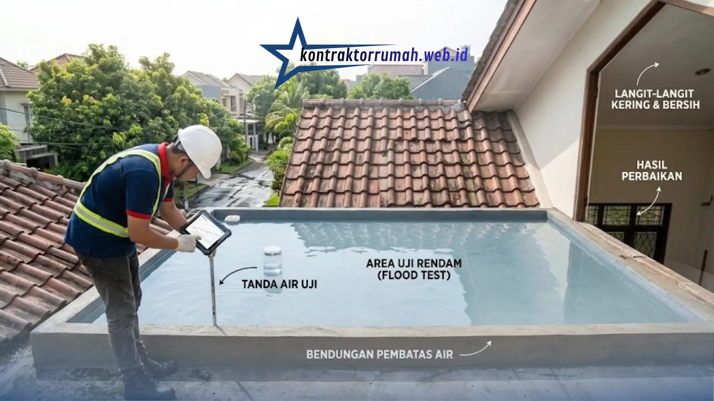

Musim hujan sering membawa mimpi buruk tersendiri bagi pemilik rumah: noda kecokelatan di plafon, atau bahkan tetesan air yang jatuh tepat di tengah ruang keluarga. Kebocoran atap bukan sekadar masalah estetika. Jika dibiarkan berlarut-larut, air dapat merembes ke instalasi listrik dan melapukkan struktur rangka atap, yang pada akhirnya membutuhkan biaya perbaikan jauh lebih besar. Sayangnya, banyak orang masih mengandalkan tambalan semen biasa yang sifatnya hanya sementara dan kembali bocor di musim hujan berikutnya.
Untuk perlindungan yang benar-benar maksimal dan tahan lama, menggunakan jasa waterproofing atap rumah profesional adalah investasi paling cerdas. Tim profesional memahami persis jenis material yang cocok untuk berbagai jenis atap—baik dak beton, genteng, maupun asbes—sehingga hasil pelapisan lebih tahan lama dan tidak mudah gagal di tengah jalan.
Poin Penting
- Tambalan semen biasa hanya sementara; kebocoran yang dibiarkan bisa merembes ke instalasi listrik dan melapukkan rangka atap.
- Penyebab umum: retak rambut dak beton, genteng bergeser, talang tersumbat, dan lapisan lama yang berusia 5–10 tahun.
- Tiga tahap utama: pembersihan, perbaikan retak, dan coating 2–3 lapis menyilang.
- Tanyakan apakah layanan mencakup uji rendam (flood test) selama 24–48 jam.
- Pengerjaan rumah tipe 36–45 sekitar 2–4 hari; biaya dihitung per m² dan sebaiknya diawali survei lokasi.
Kenali Dulu Penyebab Umum Kebocoran Atap
Sebelum masuk ke proses pengerjaan, penting memahami akar masalahnya. Kebocoran biasanya disebabkan oleh retak rambut pada dak beton akibat pemuaian dan penyusutan material saat suhu berubah drastis, sambungan genteng yang bergeser karena angin kencang, talang air yang tersumbat daun dan kotoran, atau usia lapisan waterproofing lama yang sudah melewati masa pakainya (umumnya 5–10 tahun tergantung jenis material).
Tahapan Proses Pengerjaan Waterproofing
Proses waterproofing profesional umumnya melalui tiga tahap utama:
- Pembersihan menyeluruh — permukaan atap harus benar-benar bebas dari lumut, debu, dan genangan air sebelum pelapisan dimulai, karena permukaan yang kotor membuat lapisan waterproofing sulit menempel sempurna.
- Perbaikan retak — celah dan retak rambut ditutup terlebih dahulu menggunakan sealant atau semen khusus, agar tidak ada titik lemah yang menjadi jalan masuk air.
- Pelapisan (coating) — cat pelapis anti bocor diaplikasikan dalam 2 hingga 3 lapis menyilang, memastikan tidak ada pori-pori permukaan yang tertinggal dan lolos dari perlindungan.
Setelah pelapisan selesai, sebagian penyedia jasa juga melakukan uji rendam (flood test) selama 24–48 jam untuk memastikan tidak ada titik bocor yang tersisa sebelum dinyatakan selesai. Tahap ini penting dan sebaiknya Anda tanyakan apakah termasuk dalam layanan yang ditawarkan.

Uji rendam (flood test) memastikan tidak ada titik bocor yang tersisa sebelum pekerjaan dinyatakan selesai.
Estimasi Waktu Pengerjaan
Durasi pengerjaan sangat bergantung pada kondisi cuaca dan luas area yang dikerjakan. Pada cuaca cerah, waterproofing untuk rumah ukuran standar (tipe 36–45) umumnya memakan waktu 2 hingga 4 hari, agar setiap lapisan memiliki waktu cukup untuk mengering sempurna sebelum lapisan berikutnya diaplikasikan.
Cuaca lembap atau hujan bisa memperpanjang waktu pengerjaan karena proses pengeringan yang lebih lama, sehingga sebaiknya proyek dijadwalkan pada musim kemarau jika memungkinkan.
Rincian dan Faktor yang Memengaruhi Biaya
Biaya waterproofing umumnya dihitung per meter persegi (m²) dan sudah mencakup material sekaligus jasa tukang. Harga bervariasi tergantung jenis material yang digunakan:
- Membran bakar — cocok untuk area dak beton luas, daya tahan tinggi, namun pengerjaan membutuhkan keahlian khusus karena melibatkan proses pembakaran.
- Polyurethane — elastis dan mampu menutup retak rambut dengan baik, sering dipilih untuk atap dengan riwayat retak berulang.
- Acrylic — pilihan ekonomis untuk area yang tidak terlalu sering tergenang air, dengan aplikasi yang relatif cepat.
| Material | Keunggulan | Cocok Untuk |
|---|---|---|
| Membran bakar | Daya tahan tinggi; butuh keahlian khusus karena proses pembakaran | Area dak beton yang luas |
| Polyurethane | Elastis dan mampu menutup retak rambut dengan baik | Atap dengan riwayat retak berulang |
| Acrylic | Ekonomis dengan aplikasi yang relatif cepat | Area yang tidak terlalu sering tergenang air |
Karena masing-masing material punya karakteristik dan harga berbeda, sangat disarankan untuk meminta survei lokasi terlebih dahulu agar Anda mendapatkan estimasi biaya yang akurat sesuai kondisi atap sebenarnya.
FAQ Seputar Waterproofing Atap Rumah
Dengan memahami penyebab kebocoran, tahapan pengerjaan, estimasi waktu, dan faktor biaya di atas, Anda bisa menilai penawaran jasa waterproofing dengan lebih objektif dan menjadwalkan pengerjaan pada waktu terbaik. Untuk estimasi yang akurat sesuai kondisi atap Anda, tim Kontraktor Rumah siap melakukan survei lokasi.